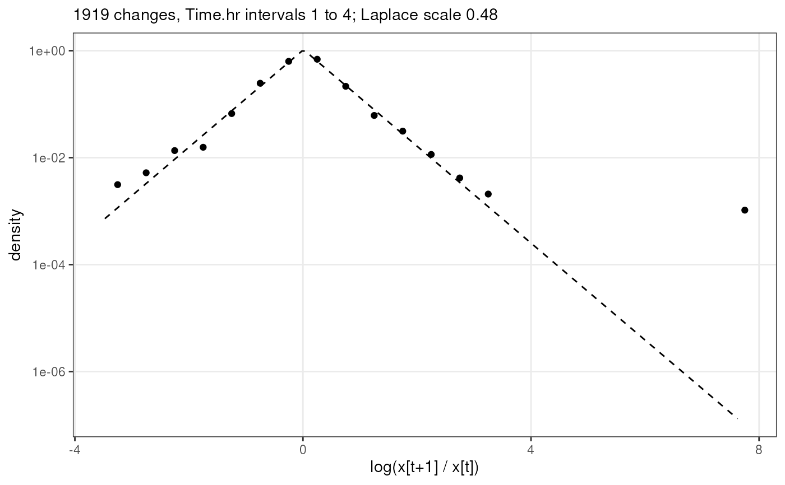
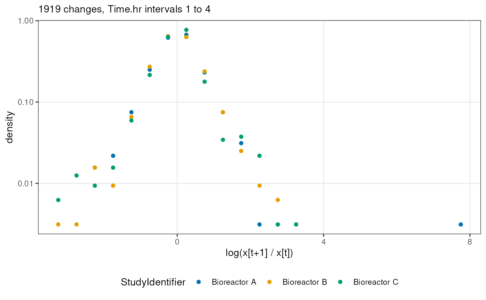

Plot the distribution of abundance changes between samples
Source:R/AllGenerics.R, R/plotChanges.R, R/zzz-mae.R
plotChanges.RdplotChanges() pools the log ratios
\(\log(x_{t+1} / x_t)\) of each feature between consecutive samples
of a subject and draws their distribution on a log density axis.
Usage
plotChanges(x, ...)
# S4 method for class 'SummarizedExperiment'
plotChanges(
x,
time.col,
group = NULL,
assay.type = "counts",
detection = 0,
group.by = NULL,
max.gap = NULL,
bins = 30,
fit = c("none", "laplace"),
...
)
# S4 method for class 'MultiAssayExperiment'
plotChanges(x, ..., experiment = 1L)Arguments
- x
a
SummarizedExperimentobject.- ...
additional arguments passed to
geom_point.- time.col
Character scalar. Specifies the column fromcolData(x)that contains sampling times: numeric,Date,POSIXctor a factor of visits. Time differences, as inmax.gap, are in days forDateand hours forPOSIXcttimes.- group
Character scalar. Specifies the column fromcolData(x)that identifies subjects. IfNULL, all samples form one series. (Default:NULL)- assay.type
Character scalar. Specifies the assay. (Default:"counts")- detection
Numeric scalar. A change is counted when the feature is above this in both samples. (Default:0)- group.by
Character scalar. Specifies the column fromcolData(x)that splits the changes into one distribution per group, by its value in the earlier sample. (Default:NULL)- max.gap
Numeric scalar. Skips the intervals between consecutive samples of a subject that are further apart than this, intime.colunits. For visits,NULLskips intervals across visits without a sample; otherwiseNULLkeeps all of them. (Default:NULL)- bins
Integer scalar. Approximate number of bins of the log ratios. (Default:30)- fit
Character scalar. Draws no fit ("none") or the Laplace distribution fitted by maximum likelihood ("laplace"), as a dashed line. (Default:"none")- experiment
Character scalarorinteger scalar. For aMultiAssayExperiment, the experiment to plot; its samples get thecolDataofx. (Default:1L)
Details
Ji et al. (2020, doi:10.1038/s41564-020-0685-1, Fig. 1) found that daily changes of gut bacteria follow a Laplace distribution, whose log density falls linearly on both sides; a normal distribution would fall as a parabola. The Laplace fit has the median as location and the mean absolute deviation from it as scale \(b\), given in the subtitle. Each point is the density of a bin with at least one change; empty bins are not drawn.
Changes over longer intervals tend to be larger, so a distribution is
comparable to another only at the same interval. The subtitle gives the
range of intervals; use max.gap to keep only the shortest
intervals of regularly sampled data, such as max.gap = 1 for
daily samples. The ratios of counts include the change in sequencing
depth; use relative or absolute abundances instead.
Examples
# Daily changes of the absolute abundances of genera in 20 women, with
# the Laplace distribution of the same median and mean absolute
# deviation
data("temporalMicrobiome20", package = "miaTime")
tse <- temporalMicrobiome20
# Three samples have no day
tse <- tse[, !is.na(tse$day)]
plotChanges(tse, time.col = "day", group = "person_id", max.gap = 1,
fit = "laplace")

# Changes of relative abundances over at most 4 hours in each of three
# bioreactors
data("minimalgut", package = "miaTime")
tse <- mia::transformAssay(minimalgut, method = "relabundance")
plotChanges(tse, time.col = "Time.hr", group = "StudyIdentifier",
assay.type = "relabundance", max.gap = 4,
group.by = "StudyIdentifier")
